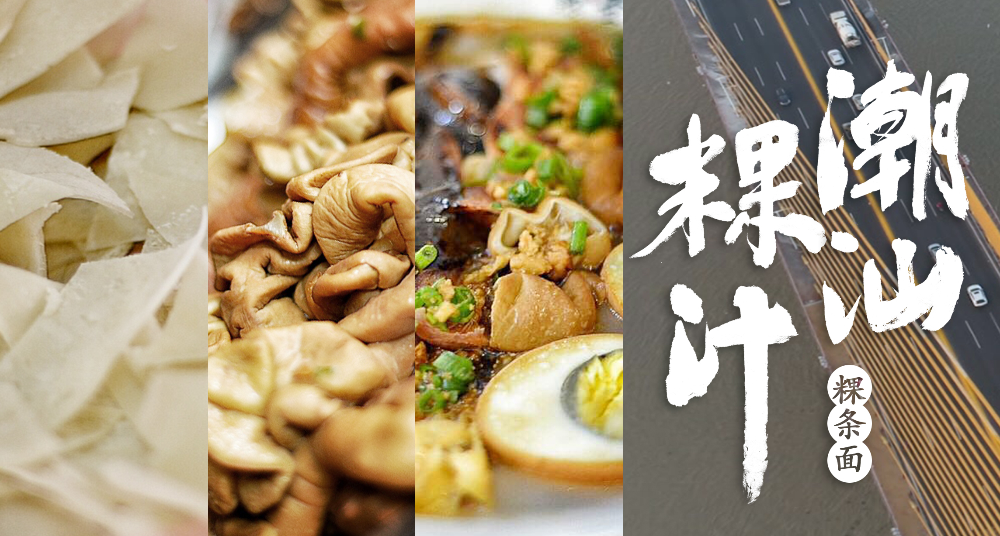
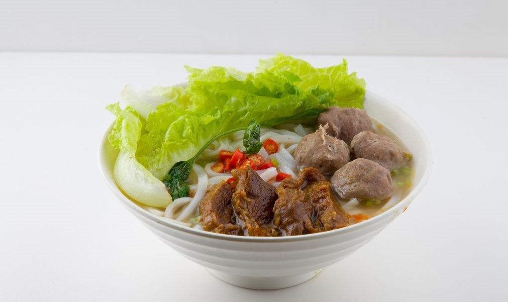
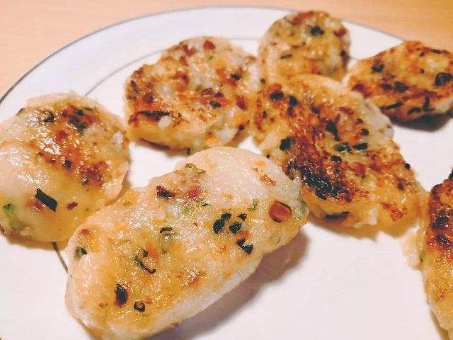
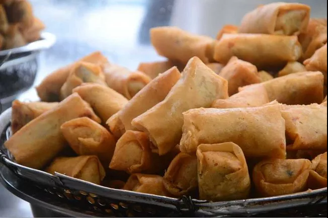
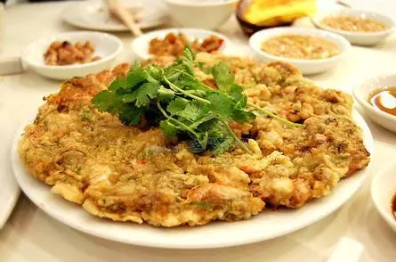
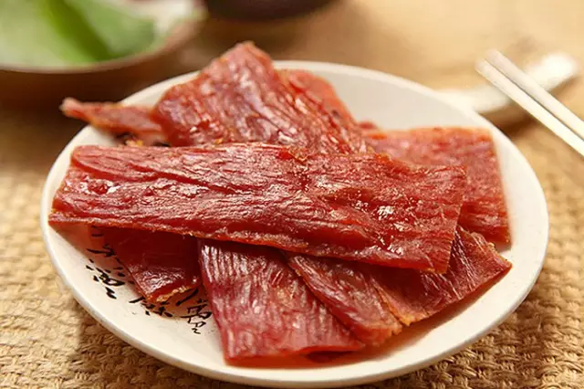
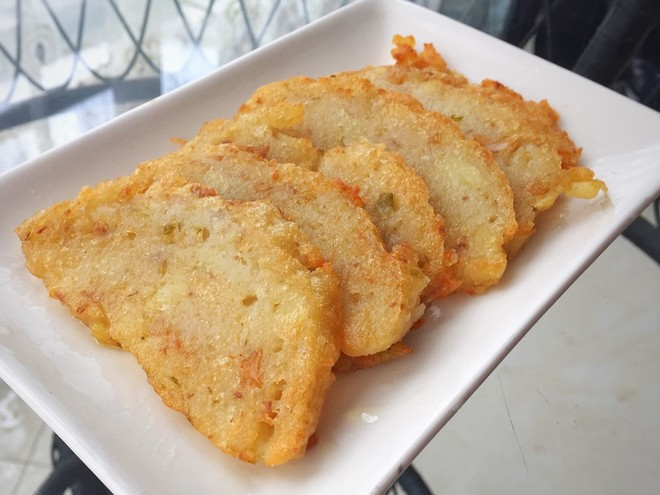
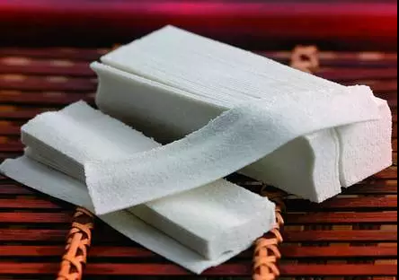

首页
潮汕饮食文化
分类
功夫茶
牛肉火锅
粿
饼
关于我们
潮汕饮食文化
—— 一方水土养一方人
潮菜为广东菜三大流派之一，发源于潮汕平原，历经千余年而形成和发展，以其独特风味自成一体，清而不淡，鲜而不腥，嫩而不生，油而不腻；讲究佐料，注重汤水；烹调方式上，烧炒炖炸俱全；讲求色香味型，丰富多彩。 随着潮州地区经济文化的发展，潮州菜肴的文化在不断地吸取其他地区的烹调技艺而形成自身特点与优长。

在历史的潮流中，潮汕菜逐步发展...
谈起潮汕的饮食文化,不得不提
牛
肉
每
个
地
方
都
有
竟
然
是
因
为
.
.
.




蚝烙

猪肉脯

蛋卷

龙湖炖糕